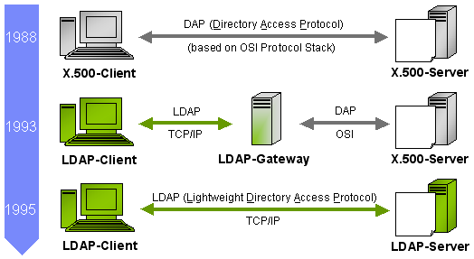
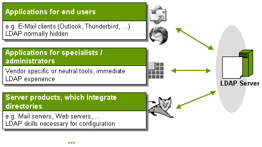
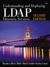

ApacheDS 2.0
Downloads
Documentation
- Basic User Guide
- Advanced User Guide
- Developer Guide
- Kerberos User Guide
- Configuration
- JavaDocs
- Cross-Reference
Support
Community
About Apache
1.2 - Some Background. Directories, directory services and LDAP
This section provides a brief overview about directories, directory services and LDAP. Furthermore you find links to different resources (books, online resources, …), which may act as introduction to the topic. If you are already an LDAP expert, you’ll probably skip this section.
Directories and directory services
Generally speaking, a directory is a collection or list of data. Real world examples are telephone books (public or within organizations), church/land registers and listings of works (e.g. the Koechel-index, which lists all compositions of Mozart). All these examples have the purpose to preserve information and to make it available on demand to whom it may concern.
Within information technology the term directory is used for a special kind of data storage. It allows the structured storage and efficient retrieval of objects which are often derived from the real world (e.g. persons, IT equipment). Characteristic:
- all data is stored in so called entries
- the set of entries within a directory forms a tree (hierarchical database)
A directory service is a solution which offers users access to the information stored in the directory. A directory assistance (call center agent) is a good real world example for such a service. Within information technologies, such services are normally provided by software components. Directory services provide access to the content of a directory via a well-defined interface. If a network is used, an appropriate protocol has to be defined. LDAP (see below) is such a protocol.
The real world examples mentioned above may be stored in such a directory, although other types of storage systems can be more appropriate (this depends on circumstance/requirements). At first sight directories compete thereby as data storage with the established relational data bases. However in the most large enterprises and organizations both directory services and relational databases are actually used. Read how Vikas Mahajan describes directories and databases as complementary, not competitive, solutions in his excellent article “Should I Use a Directory, a Database, or Both?".
LDAP – the Lightweight Directory Access Protocol
What is it? Some history.
The comprehensive standard X.500, finalized in 1988, builds the foundation for many of today’s directory solutions. Within this standard, the client accesses the server via the Directory Access Protocol (DAP), which is OSI protocol stack based. With the Internet boom in the nineties, the accessibility of directories via TCP/IP became more and more important. Hence a TCP/IP-based access method, which in functionality was a subset of DAP, was standardized in 1993: the Lightweight Directory Access Protocol (LDAP). First LDAP implementations were gateway solutions, they mediated between LDAP clients and X.500 servers. In 1995 the University of Michigan presented the first native LDAP server; in the meantime the work is continued by the OpenLDAP project. 1996 Netscape followed with the first commercial LDAP server (Netscape Directory Server, foundation of several later LDAP servers). Other examples (among many others) include Microsoft Active Directory and Novell eDirectory. The figure below shows the development of directory protocols from X.500/DAP to LDAP.

Information model primer
Within the information model of LDAP, data is stored in entries, which build up a hierarchical, tree like structure. Each entry has a unique name (DN, Distinguished Name), which depicts its position within the tree. An entry consists of key/value pairs, the attributes. Some attributes may occur more than once within an entry (single or multi valued, e.g. a person can have more than one telephone number). So called object classes define, which attributes an entry may have, and which of them are required. The classes build up a hierarchy with top as root; there is a parallelism to the object oriented world. top forces only the attribute objectclass, which assigns an entry its object classes. A schema consists object classes and attribute types, and therefore defines, what kind of entries can be stored within the directory. Directory servers ship a schema out-of-the-box, often with elements standardized by RFCs. In addition, most directory solutions allow you to define custom object classes and attributes. But in practice, the pre-defined elements are used. Sometimes they get extended according to special requirements.
Common applications of LDAP based directories
LDAP operations include entry creation, modification, deletion and search. As a general rule, LDAP directories are optimized for read and search operations, at the cost of write performance. Data, which will be modified often, therefore better suits in a relational database, which offers better support for transactions and referential integrity as well. Directories are rather used if comparatively stable data has to be provided centrally.
Common examples are network resources (printers, services) and user data (including credentials and rights for the resources). As a notable feature, many directory products offer replicas, which permit better access times and higher availability especially in geographically dispersed organizations. Not for nothing, the most common LDAP application is the enterprise phone book. That even Microsoft Outlook may be an LDAP client in this case - most average users probably don’t know.
Examples of software components which support LDAP

Very different types of software products may act as LDAP clients, consuming data for authentication, authorization or data presentation etc.
- E-Mail clients (e.g. Mozilla Thunderbird)
- LDAP tools (e.g. Apache Directory Studio)
- Web servers (e.g. Apache Tomcat, Apache HTTP Server)
- Mail servers (e.g. Apache James)
- …
Configuration details for several of these programs in conjunction with ApacheDS are described in later sections.
LDAP resources
Books
There are several good LDAP books available. Here are two examples which provide sample chapters on their homepages.
Understanding and Deploying LDAP Directory Services

Understanding and Deploying LDAP Directory Services (2nd Edition)
by Timothy A. Howes, Mark C. Smith, Gordon S. Good, Tim Howes
Addison-Wesley Professional, 2nd Edition 2003
ISBN: 0-672323-16-8
LDAP fuer Java-Entwickler
LDAP fuer Java-Entwickler – Einstieg und Integration. 
von Stefan Zoerner
Software und Support Verlag, 3. aktualisierte Auflage 2007
ISBN: 978-3-939084-07-5
Articles, forums, blogs and other online resources
Blogs
Articles and other online resources
- Understanding LDAP - Design and Implementation, IBM RedBook, July 2006
- Demystifying LDAP by Brian K. Jones, O’Reilly Network
- LDAP verstehen mit linx, by Petra Haberer